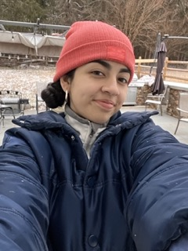

smiling during a disappointing snowfall in Charlotte
Personal Background: I’m originally from Colombia, South America, but moved to the US when I was 5 years old. I have been living in Charlotte for about 10 years now.
Professional Background: I am currently a full-time student at UNCC, completing my Computer Science major. I hope to graduate this Spring.
Academic Background: I am completing my major in Computer Science with a concentration in Software Engineering. I completed my general education at CPCC, but then transferred to UNCC to focus on my major.
Primary Computer Platform: MacOS on MacBook Pro.
Courses I’m Taking & Why:
ITIS 4350 - Rapid Prototyping: I am taking this course because I needed to fulfill some elective requirements. Since I enjoyed human-centered design, I decided to take this course to learn more about the subject.
ITIS 3320 - Intro Software Testing & Assurance: I am taking this course to fulfill a full-time schedule.
ITSC 1110 - Introduction to Computer Science Principles: I am taking this course to fulfill a full-time schedule.
ITIS 4221 - Secure Programming and Penetration Testing: I am taking this course to fulfill a major requirement.
Funny/Interesting Item about Yourself: I got married on September 21st, so I have a pretty cool anniversary song (“September” by Earth, Wind & Fire).
I’d also like to share: I am graduating this semester!